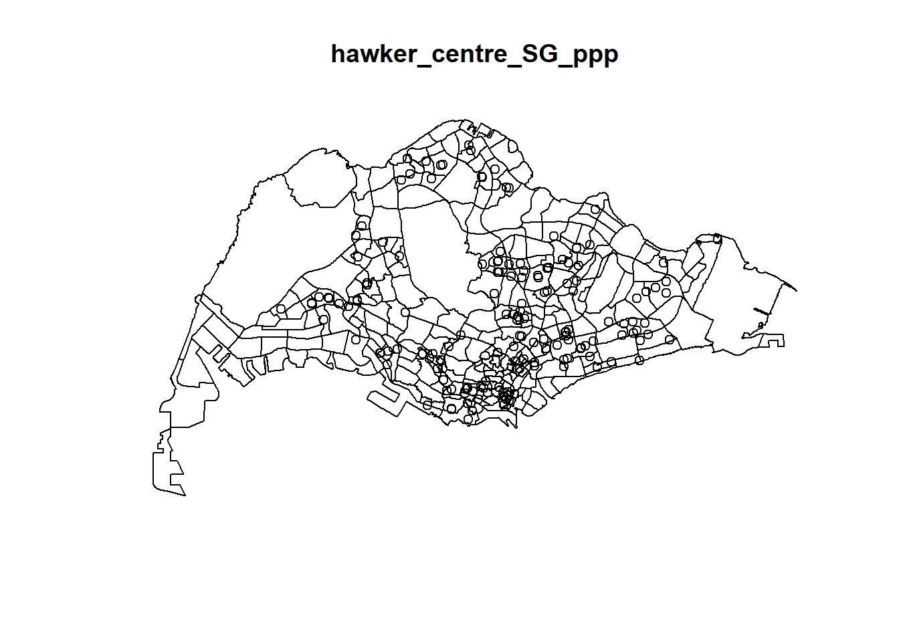
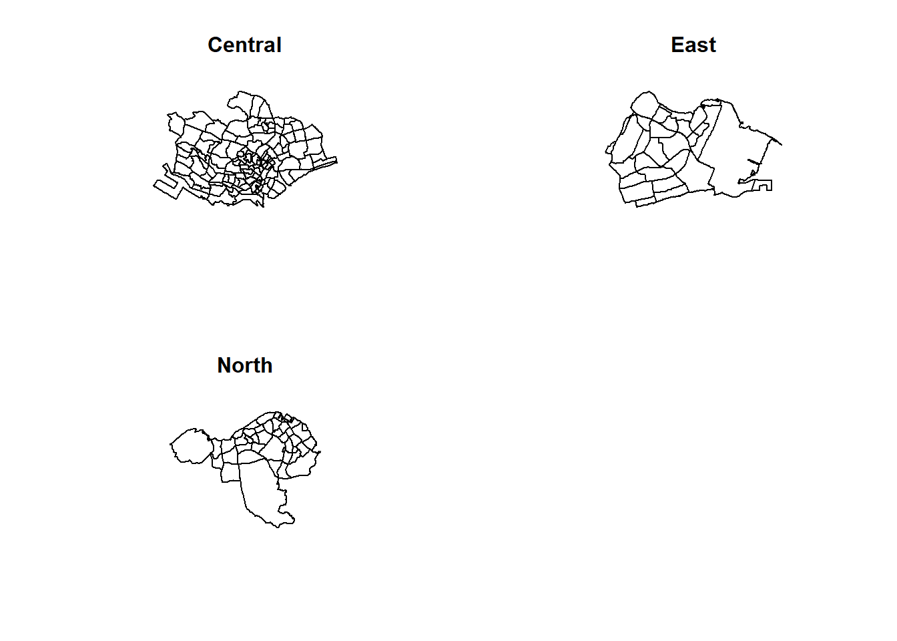

Code
pacman::p_load(maptools, sf, raster, spatstat, tmap, readr)Prototyping Modules for Geospatial Analytics Shiny Application involves selecting the “1st Order Analysis - Density and Distribution of Hawker Centres” module and completing tasks such as:
Evaluating R packages compatibility
Testing R codes for expected outputs
Determining parameters and outputs for the Shiny application
Selecting suitable Shiny UI components to expose these parameters.
Installing the required tools for the analysis:
sf: Package for importing, managing, and processing vector-based geospatial data efficiently.
spatstat: Package for analyzing spatial point pattern data, including spatial statistics and point process modeling.
raster: Package for working with raster (gridded) spatial data, enabling analysis and visualization of spatial phenomena.
maptools: Package providing tools for reading, writing, and manipulating spatial data in various formats, enhancing interoperability between different geospatial data sources.
tmap: Package for creating thematic maps and visualizations of spatial data, offering an intuitive interface and flexible options for customization
readr: R package that provides fast and friendly functions for reading structured text data, including CSV files
pacman::p_load(maptools, sf, raster, spatstat, tmap, readr)This is where we import the data and prepare it before analysis.
Let’s use st_read() of sf package to import these 3 geospatial data sets into R. And we will be using other functions to prepare our data upon importing them.
The data sets are:
updated_hawker_centres: shows the postal code, latitude and longitude of all hawker centres in Singapore
MP14_SUBZONE_WEB_PL: polygon feature data providing information of URA 2014 Master Plan Planning Subzone boundary data. It is in ESRI shapefile format. This data set was also downloaded from Data.gov.sg.
CoastalOutline: a polygon feature data showing the national boundary of Singapore. It is provided by SLA and is in ESRI shapefile format.
We will use st_read() of sf package to import the MP14_SUBZONE_WEB_PL dataset into R
mpsz_sf <- st_read(dsn = "data/geospatial",
layer = "MP14_SUBZONE_WEB_PL")Reading layer `MP14_SUBZONE_WEB_PL' from data source
`C:\glimjw\IS415-GAA\Take-home_Ex\Take-home_Ex03\data\geospatial'
using driver `ESRI Shapefile'
Simple feature collection with 323 features and 15 fields
Geometry type: MULTIPOLYGON
Dimension: XY
Bounding box: xmin: 2667.538 ymin: 15748.72 xmax: 56396.44 ymax: 50256.33
Projected CRS: SVY21Let’s check mpsz_sf
st_crs(mpsz_sf)Coordinate Reference System:
User input: SVY21
wkt:
PROJCRS["SVY21",
BASEGEOGCRS["SVY21[WGS84]",
DATUM["World Geodetic System 1984",
ELLIPSOID["WGS 84",6378137,298.257223563,
LENGTHUNIT["metre",1]],
ID["EPSG",6326]],
PRIMEM["Greenwich",0,
ANGLEUNIT["Degree",0.0174532925199433]]],
CONVERSION["unnamed",
METHOD["Transverse Mercator",
ID["EPSG",9807]],
PARAMETER["Latitude of natural origin",1.36666666666667,
ANGLEUNIT["Degree",0.0174532925199433],
ID["EPSG",8801]],
PARAMETER["Longitude of natural origin",103.833333333333,
ANGLEUNIT["Degree",0.0174532925199433],
ID["EPSG",8802]],
PARAMETER["Scale factor at natural origin",1,
SCALEUNIT["unity",1],
ID["EPSG",8805]],
PARAMETER["False easting",28001.642,
LENGTHUNIT["metre",1],
ID["EPSG",8806]],
PARAMETER["False northing",38744.572,
LENGTHUNIT["metre",1],
ID["EPSG",8807]]],
CS[Cartesian,2],
AXIS["(E)",east,
ORDER[1],
LENGTHUNIT["metre",1,
ID["EPSG",9001]]],
AXIS["(N)",north,
ORDER[2],
LENGTHUNIT["metre",1,
ID["EPSG",9001]]]]Let’s plot it to take a look
tmap_options(check.and.fix = TRUE)
tm_shape(mpsz_sf) +
tm_polygons()
Ok, now we have a map of Singapore, which we will be using to plot the hawker centres in the future steps.
Next, we will import our updated_hawker_centres into R
hawker_centre_sf <- read_csv("data/aspatial/updated_hawker_centres.csv")Let’s check the sf type for hawker_centre_sf
st_crs(hawker_centre_sf)Coordinate Reference System: NASince hawker_centre_sf does not have a Coordinate Reference System, that means it is not a spatial dataframe.
Now, we have to convert hawker_centre_sf to a spatial dataframe using st_as_sf method
# Convert hawker_centre_sf to sf object
hawker_centre_sf <- st_as_sf(hawker_centre_sf, coords = c("Longitude", "Latitude"), crs = 4326)Let’s check again
st_crs(hawker_centre_sf)Coordinate Reference System:
User input: EPSG:4326
wkt:
GEOGCRS["WGS 84",
ENSEMBLE["World Geodetic System 1984 ensemble",
MEMBER["World Geodetic System 1984 (Transit)"],
MEMBER["World Geodetic System 1984 (G730)"],
MEMBER["World Geodetic System 1984 (G873)"],
MEMBER["World Geodetic System 1984 (G1150)"],
MEMBER["World Geodetic System 1984 (G1674)"],
MEMBER["World Geodetic System 1984 (G1762)"],
MEMBER["World Geodetic System 1984 (G2139)"],
ELLIPSOID["WGS 84",6378137,298.257223563,
LENGTHUNIT["metre",1]],
ENSEMBLEACCURACY[2.0]],
PRIMEM["Greenwich",0,
ANGLEUNIT["degree",0.0174532925199433]],
CS[ellipsoidal,2],
AXIS["geodetic latitude (Lat)",north,
ORDER[1],
ANGLEUNIT["degree",0.0174532925199433]],
AXIS["geodetic longitude (Lon)",east,
ORDER[2],
ANGLEUNIT["degree",0.0174532925199433]],
USAGE[
SCOPE["Horizontal component of 3D system."],
AREA["World."],
BBOX[-90,-180,90,180]],
ID["EPSG",4326]]Next, we will import our CoastalOutline into R
sg_sf <- st_read(dsn = "data/",
layer = "CostalOutline")Reading layer `CostalOutline' from data source
`C:\glimjw\IS415-GAA\Take-home_Ex\Take-home_Ex03\data' using driver `ESRI Shapefile'
Simple feature collection with 60 features and 4 fields
Geometry type: POLYGON
Dimension: XY
Bounding box: xmin: 2663.926 ymin: 16357.98 xmax: 56047.79 ymax: 50244.03
Projected CRS: SVY21Let’s check sg_sf
st_crs(sg_sf)Coordinate Reference System:
User input: SVY21
wkt:
PROJCRS["SVY21",
BASEGEOGCRS["SVY21[WGS84]",
DATUM["World Geodetic System 1984",
ELLIPSOID["WGS 84",6378137,298.257223563,
LENGTHUNIT["metre",1]],
ID["EPSG",6326]],
PRIMEM["Greenwich",0,
ANGLEUNIT["Degree",0.0174532925199433]]],
CONVERSION["unnamed",
METHOD["Transverse Mercator",
ID["EPSG",9807]],
PARAMETER["Latitude of natural origin",1.36666666666667,
ANGLEUNIT["Degree",0.0174532925199433],
ID["EPSG",8801]],
PARAMETER["Longitude of natural origin",103.833333333333,
ANGLEUNIT["Degree",0.0174532925199433],
ID["EPSG",8802]],
PARAMETER["Scale factor at natural origin",1,
SCALEUNIT["unity",1],
ID["EPSG",8805]],
PARAMETER["False easting",28001.642,
LENGTHUNIT["metre",1],
ID["EPSG",8806]],
PARAMETER["False northing",38744.572,
LENGTHUNIT["metre",1],
ID["EPSG",8807]]],
CS[Cartesian,2],
AXIS["(E)",east,
ORDER[1],
LENGTHUNIT["metre",1,
ID["EPSG",9001]]],
AXIS["(N)",north,
ORDER[2],
LENGTHUNIT["metre",1,
ID["EPSG",9001]]]]The crs information isn’t consistent as hawker_centre_sf is in WGS84, while the ‘sg_sf” and ’mpsz_sf’ are in SVY21
target_crs = st_crs(sg_sf)
hawker_centre_sf <- st_transform(hawker_centre_sf, target_crs)
st_crs(hawker_centre_sf)Coordinate Reference System:
User input: SVY21
wkt:
PROJCRS["SVY21",
BASEGEOGCRS["SVY21[WGS84]",
DATUM["World Geodetic System 1984",
ELLIPSOID["WGS 84",6378137,298.257223563,
LENGTHUNIT["metre",1]],
ID["EPSG",6326]],
PRIMEM["Greenwich",0,
ANGLEUNIT["Degree",0.0174532925199433]]],
CONVERSION["unnamed",
METHOD["Transverse Mercator",
ID["EPSG",9807]],
PARAMETER["Latitude of natural origin",1.36666666666667,
ANGLEUNIT["Degree",0.0174532925199433],
ID["EPSG",8801]],
PARAMETER["Longitude of natural origin",103.833333333333,
ANGLEUNIT["Degree",0.0174532925199433],
ID["EPSG",8802]],
PARAMETER["Scale factor at natural origin",1,
SCALEUNIT["unity",1],
ID["EPSG",8805]],
PARAMETER["False easting",28001.642,
LENGTHUNIT["metre",1],
ID["EPSG",8806]],
PARAMETER["False northing",38744.572,
LENGTHUNIT["metre",1],
ID["EPSG",8807]]],
CS[Cartesian,2],
AXIS["(E)",east,
ORDER[1],
LENGTHUNIT["metre",1,
ID["EPSG",9001]]],
AXIS["(N)",north,
ORDER[2],
LENGTHUNIT["metre",1,
ID["EPSG",9001]]]]Let’s plot sg_sf to see how it looks like
tmap_options(check.and.fix = TRUE)
tm_shape(sg_sf) +
tm_polygons()
We can see that sg_sf includes the outlying islands of Singapore, where there are no hawker centers. Therefore, we will remove those outlying islands from sg_sf dataset.
main_island_name <- "SINGAPORE - MAIN ISLAND"
# Filter out the main island from sg_sf based on the COSTAL_NAM column
sg_sf <- sg_sf[sg_sf$COSTAL_NAM == main_island_name, ]Now, let’s check sg_sf again.
tmap_options(check.and.fix = TRUE)
tm_shape(sg_sf) +
tm_polygons()We have successfully removed the outlying island, and now sg_sf consist of just the mainland. We will have to ensure that mpsz_sf follows the same.
mpsz_sf <- st_intersection(mpsz_sf, sg_sf)Let’s plot both mpsz_sf and hawker_centre_sf datasets using tmap to see the hawker centres points on the map
tm_shape(mpsz_sf) +
tm_borders() +
tm_fill("lightgrey") +
tm_layout(title = "Map of Singapore with Hawker Centres") +
# Add the hawker_centre_sf layer
tm_shape(hawker_centre_sf) +
tm_bubbles(size = 0.2, col = "red")Now that we can see the hawker centres (represented by red dots) on the map, we will proceed to doing the necessary preparation for our 1st Order Analysis model.
We have to convert our datasets to sp’s spatial class type by using
mpsz <- as_Spatial(mpsz_sf)
hawker_centre <- as_Spatial(hawker_centre_sf)
sg <- as_Spatial(sg_sf)Let’s take a look at our newly created spatial classes
mpszclass : SpatialPolygonsDataFrame
features : 314
extent : 2667.538, 51155.87, 21912.97, 50244.03 (xmin, xmax, ymin, ymax)
crs : +proj=tmerc +lat_0=1.36666666666667 +lon_0=103.833333333333 +k=1 +x_0=28001.642 +y_0=38744.572 +datum=WGS84 +units=m +no_defs
variables : 19
names : OBJECTID, SUBZONE_NO, SUBZONE_N, SUBZONE_C, CA_IND, PLN_AREA_N, PLN_AREA_C, REGION_N, REGION_C, INC_CRC, FMEL_UPD_D, X_ADDR, Y_ADDR, SHAPE_Leng, SHAPE_Area, ...
min values : 1, 1, ADMIRALTY, AMSZ01, N, ANG MO KIO, AM, CENTRAL REGION, CR, 00F5E30B5C9B7AD8, 16409, 5092.8949, 26137.8735, 871.554887798, 39437.9352703, ...
max values : 323, 17, YUNNAN, YSSZ09, Y, YISHUN, YS, WEST REGION, WR, FFCCF172717C2EAF, 16409, 49502.4866, 49552.7904, 54928.0938742, 69748298.792, ... hawker_centreclass : SpatialPointsDataFrame
features : 157
extent : 12287.78, 45241.87, 27687.24, 48372.26 (xmin, xmax, ymin, ymax)
crs : +proj=tmerc +lat_0=1.36666666666667 +lon_0=103.833333333333 +k=1 +x_0=28001.642 +y_0=38744.572 +datum=WGS84 +units=m +no_defs
variables : 3
names : Hawker.Centres, Postal.Code.FULL., Postal.Code
min values : 112 BUKIT MERAH MARKET & FOOD CENTRE 112 JALAN BUKIT MERAH, S048947, 48947
max values : ZION RIVERSIDE FOOD CENT RE 70 ZION RD, S828629, 828629 sgclass : SpatialPolygonsDataFrame
features : 1
extent : 2663.926, 51155.87, 21739.66, 50244.03 (xmin, xmax, ymin, ymax)
crs : +proj=tmerc +lat_0=1.36666666666667 +lon_0=103.833333333333 +k=1 +x_0=28001.642 +y_0=38744.572 +datum=WGS84 +units=m +no_defs
variables : 4
names : GDO_GID, MSLINK, MAPID, COSTAL_NAM
value : 5, 7, 0, SINGAPORE - MAIN ISLAND As the spatial classes are created successfully, we will proceed to converting them into sp type. As spatstat requires data to be in ppp object form, we will have to convert our spatial classes into sp type (sp objects) first. So, we will convert our hawker_centre spatial class into sp type.
hawker_centre_sp <- as(hawker_centre, "SpatialPoints")
sg_sp <- as(sg, "SpatialPolygons")Let’s take a look at the hawker_centre_sp and sg_sp
hawker_centre_spclass : SpatialPoints
features : 157
extent : 12287.78, 45241.87, 27687.24, 48372.26 (xmin, xmax, ymin, ymax)
crs : +proj=tmerc +lat_0=1.36666666666667 +lon_0=103.833333333333 +k=1 +x_0=28001.642 +y_0=38744.572 +datum=WGS84 +units=m +no_defs sg_spclass : SpatialPolygons
features : 1
extent : 2663.926, 51155.87, 21739.66, 50244.03 (xmin, xmax, ymin, ymax)
crs : +proj=tmerc +lat_0=1.36666666666667 +lon_0=103.833333333333 +k=1 +x_0=28001.642 +y_0=38744.572 +datum=WGS84 +units=m +no_defs As mentioned earlier, we will have to convert our sp type for hawker_centre_sp to ppp type
hawker_centre_ppp <- as.ppp(hawker_centre_sp)
hawker_centre_pppPlanar point pattern: 157 points
window: rectangle = [12287.78, 45241.87] x [27687.24, 48372.26] unitsLet’s plot the hawker_centre_ppp and visualise it
plot(hawker_centre_ppp)We will create an owin object so that we can ensure our analysis is within Singapore. We will create an owin object using mpsz.
sg_owin <- as(sg_sp, "owin")
sg_owinwindow: polygonal boundary
enclosing rectangle: [2663.93, 51155.87] x [21739.66, 50244.03] unitsLet’s plot mpsz_owin and visualise it.
plot(sg_owin)
Now that we have created our hawker_centre_ppp and mpsz_owin objects, we will combine them and to make sure all our points in hawker_centre_ppp are within the mpsz_owin.
# Plot the PPP on the sg_owin window
hawker_centre_SG_ppp = hawker_centre_ppp[sg_owin]
plot(hawker_centre_SG_ppp)Now, we can see all the hawker centres which are plotted on the Singapore Map in our newly created hawker_centre_SG_ppp.
This is where the magic happens.
We will be computing the KDE of hawker centres in Singapore.
We will convert the range type to km
# Convert the coordinates of hawker_centre_SG_ppp to a suitable CRS using kilometers
hawker_centre_SG_ppp_km <- rescale(hawker_centre_SG_ppp, 1000, "km")Let’s keep kde_hawker_centre_bw_km in our rds for easy reference in the future. So as to save time in the future when we are performing our analysis.
write_rds(hawker_centre_SG_ppp_km, "data/rds/hawker_centre_SG_ppp_km")Retrieve kde_hawker_centre_bw_km from rds.
hawker_centre_SG_ppp_km <- read_rds("data/rds/hawker_centre_SG_ppp_km")Now, We will use the density() method to get the KDE
# Perform kernel density estimation with the specified bandwidth and kernel
kde_hawker_centre_bw_km <- density(hawker_centre_SG_ppp_km,
sigma = bw.diggle,
edge=TRUE,
kernel = "gaussian") Let’s keep kde_hawker_centre_bw_km in our rds for easy reference in the future. So as to save time in the future when we are performing our analysis.
write_rds(kde_hawker_centre_bw_km, "data/rds/kde_hawker_centre_bw_km")Retrieve kde_hawker_centre_bw_km from rds.
kde_hawker_centre_bw_km <- read_rds("data/rds/kde_hawker_centre_bw_km")Let’s plot kde_hawker_centre_bw_km and visualise it
plot(kde_hawker_centre_bw_km)As you can see from the map above, we can see that there is a higher density of hawker centers in the southern region of Singapore, which is in the Central Business District (CBD), followed by the Eastern side (along the East Coast region of Singapore), and the Central region of Singapore. There are other regions in the West and North where we could see a smaller density of hawker centers.
Firstly,We will zoom into the different kernel types in the next few steps.
When kernel is gaussian type
plot(density(hawker_centre_SG_ppp_km,
sigma=bw.ppl,
edge=TRUE,
kernel="gaussian"),
main="Gaussian")When kernel is epanechnikov type
plot(density(hawker_centre_SG_ppp_km,
sigma=bw.ppl,
edge=TRUE,
kernel="epanechnikov"),
main="Epanechnikov")When kernel is quartic type
plot(density(hawker_centre_SG_ppp_km,
sigma=bw.ppl,
edge=TRUE,
kernel="quartic"),
main="Quartic")When kernel is disc type
plot(density(hawker_centre_SG_ppp_km,
sigma=bw.ppl,
edge=TRUE,
kernel="disc"),
main="Disc")
Point to note:
For our shiny app, we will allow users to choose their preferred Kernel type and they are:
Gaussian kernel:
Density is highest at the center of each data point.
Density gradually decreases as you move away.
It’s like a smooth hill around each point.
Epanechnikov kernel:
Density forms a bowl shape around each data point.
Focuses more on points close to the center.
It’s like a shallow bowl where nearby points matter more.
Quartic kernel:
Similar to the Epanechnikov, but with a smoother curve.
Still focused on each data point.
Resembles a rounded mound where nearby points influence density.
Disc kernel:
Creates a circle around each data point.
All points within the circle contribute equally to density.
It’s like spreading paint around each point with no preference for distance.
# Identify duplicated points
duplicated_points <- hawker_centre_SG_ppp_km[duplicated(hawker_centre_SG_ppp_km), ]
# Remove duplicated points
hawker_centre_SG_ppp_km <- unique(hawker_centre_SG_ppp_km)
summary(hawker_centre_SG_ppp_km)Planar point pattern: 156 points
Average intensity 0.245214 points per square km
Coordinates are given to 6 decimal places
Window: polygonal boundary
single connected closed polygon with 5140 vertices
enclosing rectangle: [2.66393, 51.15587] x [21.73966, 50.24403] km
(48.49 x 28.5 km)
Window area = 636.179 square km
Unit of length: 1 km
Fraction of frame area: 0.46We will try to set sigma to 0.6 and 1.2, which represents 600m and 1.2km respectively.
plot(density(hawker_centre_SG_ppp_km,
sigma=0.6,
edge=TRUE,
kernel="disc"),
main="sigma=0.6")plot(density(hawker_centre_SG_ppp_km,
sigma=1.2,
edge=TRUE,
kernel="disc"),
main="sigma=0.6")
Point to note:
For our shiny app, we will allow users to choose their preferred sigma (bandwidth):
We will be exploring the different spatial point patterns of each areas and region using KDE.
We will check the number of unique planning areas, PLN_AREA_N, in our mpsz_sf.
num_planning_areas <- length(unique(mpsz$PLN_AREA_N))
print(num_planning_areas)[1] 52We will also look at the list of planning areas
planning_areas <- unique(mpsz$PLN_AREA_N)
print(planning_areas) [1] "MARINA SOUTH" "OUTRAM"
[3] "SINGAPORE RIVER" "BUKIT MERAH"
[5] "QUEENSTOWN" "MARINA EAST"
[7] "RIVER VALLEY" "DOWNTOWN CORE"
[9] "STRAITS VIEW" "MARINE PARADE"
[11] "MUSEUM" "ORCHARD"
[13] "ROCHOR" "KALLANG"
[15] "TANGLIN" "NEWTON"
[17] "CLEMENTI" "TUAS"
[19] "BEDOK" "PIONEER"
[21] "JURONG EAST" "BUKIT TIMAH"
[23] "NOVENA" "GEYLANG"
[25] "BOON LAY" "TOA PAYOH"
[27] "JURONG WEST" "BUKIT BATOK"
[29] "SERANGOON" "PAYA LEBAR"
[31] "BISHAN" "TAMPINES"
[33] "HOUGANG" "BUKIT PANJANG"
[35] "ANG MO KIO" "CHOA CHU KANG"
[37] "PASIR RIS" "CHANGI"
[39] "SENGKANG" "CHANGI BAY"
[41] "TENGAH" "SUNGEI KADUT"
[43] "PUNGGOL" "YISHUN"
[45] "MANDAI" "SELETAR"
[47] "WOODLANDS" "WESTERN WATER CATCHMENT"
[49] "SEMBAWANG" "LIM CHU KANG"
[51] "SIMPANG" "CENTRAL WATER CATCHMENT"Now, we know that there are 55 regions, which the users can choose from in Shiny app.
Let’s test some of it and visualize it
amk = mpsz[mpsz@data$PLN_AREA_N == "ANG MO KIO",]
tm = mpsz[mpsz@data$PLN_AREA_N == "TAMPINES",]
dt = mpsz[mpsz@data$PLN_AREA_N == "DOWNTOWN CORE",]Let’s plot and see
par(mfrow=c(2,2))
plot(amk, main = "Ang Mo Kio")
plot(tm, main = "Tampines")
plot(dt, main = "Downtown")We will convert them into spatialpolygonsdataframe
amk_sp = as(amk, "SpatialPolygons")
tm_sp = as(tm, "SpatialPolygons")
dt_sp = as(dt, "SpatialPolygons")We will create the owin object
amk_owin = as(amk_sp, "owin")
tm_owin = as(tm_sp, "owin")
dt_owin = as(dt_sp, "owin")Combine them with the hawker centre points into a ppp
hawker_centre_amk_ppp = hawker_centre_ppp[amk_owin]
hawker_centre_tm_ppp = hawker_centre_ppp[tm_owin]
hawker_centre_dt_ppp = hawker_centre_ppp[dt_owin]We have to rescale it to the unit of measurement to km
hawker_centre_amk_ppp_km = rescale(hawker_centre_amk_ppp, 1000, "km")
hawker_centre_tm_ppp_km = rescale(hawker_centre_tm_ppp, 1000, "km")
hawker_centre_dt_ppp_km = rescale(hawker_centre_dt_ppp, 1000, "km")Let’s plot and see
par(mfrow=c(2,2))
plot(hawker_centre_amk_ppp_km, main="Ang Mo Kio")
plot(hawker_centre_tm_ppp_km, main="Tampines")
plot(hawker_centre_dt_ppp_km, main="Downntown")Now, it is time for the KDE
par(mfrow=c(2,2))
plot(density(hawker_centre_amk_ppp_km,
sigma=0.25,
edge=TRUE,
kernel="gaussian"),
main="Ang Mo Kio")
plot(density(hawker_centre_tm_ppp_km,
sigma=0.25,
edge=TRUE,
kernel="gaussian"),
main="Tampines")
plot(density(hawker_centre_dt_ppp_km,
sigma=0.25,
edge=TRUE,
kernel="gaussian"),
main="Downtown")
We will check the number of unique planning area (or region), REGION_N, in our mpsz_sf.
num_regions <- length(unique(mpsz$REGION_N))
print(num_regions)[1] 5We will also look at the list of planning areas
regions <- unique(mpsz$REGION_N)
print(regions)[1] "CENTRAL REGION" "WEST REGION" "EAST REGION"
[4] "NORTH-EAST REGION" "NORTH REGION" Now, we know that there are 55 regions, which the users can choose from in Shiny app.
Let’s test some of it and visualize it
central = mpsz[mpsz@data$REGION_N == "CENTRAL REGION",]
east = mpsz[mpsz@data$REGION_N == "EAST REGION",]
north = mpsz[mpsz@data$REGION_N == "NORTH REGION",]Let’s plot and see
par(mfrow=c(2,2))
plot(central, main = "Central")
plot(east, main = "East")
plot(north, main = "North")
We will convert them into spatialpolygonsdataframe
central_sp = as(central, "SpatialPolygons")
east_sp = as(east, "SpatialPolygons")
north_sp = as(north, "SpatialPolygons")We will create the owin object
central_owin = as(central_sp, "owin")
east_owin = as(east_sp, "owin")
north_owin = as(north_sp, "owin")Combine them with the hawker centre points into a ppp
hawker_centre_central_ppp = hawker_centre_ppp[central_owin]
hawker_centre_east_ppp = hawker_centre_ppp[east_owin]
hawker_centre_north_ppp = hawker_centre_ppp[north_owin]We have to rescale it to the unit of measurement to km
hawker_centre_central_ppp_km = rescale(hawker_centre_central_ppp, 1000, "km")
hawker_centre_east_ppp_km = rescale(hawker_centre_east_ppp, 1000, "km")
hawker_centre_north_ppp_km = rescale(hawker_centre_north_ppp, 1000, "km")Let’s plot and see
par(mfrow=c(2,2))
plot(hawker_centre_central_ppp_km, main="Central")
plot(hawker_centre_east_ppp_km, main="East")
plot(hawker_centre_north_ppp_km, main="North")Now, it is time for the KDE
par(mfrow=c(2,2))
plot(density(hawker_centre_central_ppp_km,
sigma=0.25,
edge=TRUE,
kernel="gaussian"),
main="Central")
plot(density(hawker_centre_east_ppp_km,
sigma=0.25,
edge=TRUE,
kernel="gaussian"),
main="East")
plot(density(hawker_centre_north_ppp_km,
sigma=0.25,
edge=TRUE,
kernel="gaussian"),
main="North")
We can see that there is a higher density of hawker centres in the Central region.
In our shiny app, we will allow our users to select the different regions, of which they could do the comparison on their own.
These will be the parameters for our shiny app.
IN SUMMARY for our Shiny App, we will allow our users to provide input for:
Sigma (or bandwidth): Users can enter their preferred bandwidth (on a scale)
Kernel: Users can choose the type of kernel type (e.g. Gaussian, Epanechnikov, Quartic, Disc)
Location: Users can choose a specific location (planning area) that they would wish to analyse (e.g. Ang Mo Kio, Downtown)
Region: Users can choose a specific region that they would wish to analyse (e.g. NORTH, EAST, NORTH-EAST, CENTRAL, WEST)
Note: Region and Location are different. However, we would look into the possibility of allow users to filter region (without choosing a Location), and also allowing them to choose a location through a region should they wish to analyse a specific location.